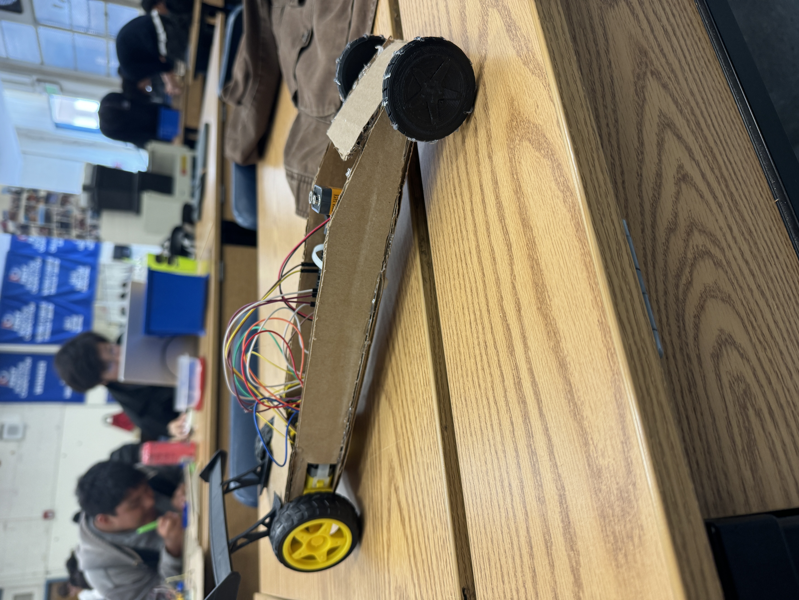

1/19/24
This week we learned about what is Chemical Engineering and what you do in it. Chemical Engineering is the proccess which extracts, works with and makes different type of chemicals.
We also made oobleck by adding water slowly to corn starch, slowly mixing to make the hard/ slimy substance. When hit hard is as hard as a rock but when playd with slowly turns into almost slime and easy to break.
We are starting the proccess of making a Arduino Car, we eventually will have to build the machine from our CAD. We have already made and connected our circuit board digitally but we will have to do that same thing to make the car move. We will have to code to move the car too any way we want to.
2/5/24
This next week were preparing to finalize the code and start creating the mini machine and make it drive.
Last week we figured out to wire and code to turn the motors on. We got it to work pretty good and now we are in the process of creating the body to hold all of the stuff.
By Friday I want to have atleast half of the car's body built
Me and a few of my friends went on a private road and rode in the back of my friends truck.
2/13/24
This week we worked on our Arduino Car's body, we do have a final design drawn for what it will look like when we finish building it. We have cut half of the pieces for the body of it but we still to to measure and cut the rest.
We can definitly fix/work on the code to get the car acutally moving and doing differnet things, we can fix our circuit board and wires.
2/26/24
We tried to base our car off of a drag car. It turned out really good and looks really good, looks the best in the class, it preformed pretty good for what was programed. I messed up the code and ran out of time to fix it so it goes forward them does a burnout then turnes slightly. Overall our car was pretty good and turned out good. THe building proccess wasnt the hardest thing it wa easy most of the time.

Car Thirst Trap
3/4/2024
Right now we are starting to make a device that will protect a egg from a 3 story wiht the material we are provided with.
My groups approach with this project is to add differnet items to help with drag when it is dropped to slow it down. We will have straws to put the egg in the air and hold it to try to help add suspension to the egg to distort the force of the drop when it hits the ground.
What im scared of happining is either the items that are suppose to add drag wont work how they are intended to or the box might land werid on the floor.
3/13/2024
My groups egg drop when ok, the thing we made to protect it didn't really work out how we wanted it to. When it was dropped off the edge it kind of deconstructed itself on the way down. The egg fell out but some how it only had a crack in it and didn't fully break when it hit the ground. I kind of knew that what happened would happen because we had two boxes and the box with the egg in it was loose in the second box, it had to lid on it, I told myself that it might fall out of it and I was 100% right. It fully fell out of the second box but still some how the egg survived.
Im gonna go on a 3 day crusie from Friday to Monday. Other than that im not really doing anything else over spring break, probably just gonna go out with friends once every few days.
This week we are creating a small boat type device that has to move 500m down a gutter with either motor or blow power. Our project is just two water balloons at the bottom to keep it up and a sail because we are going to use blow power to move it but we only get 4 blows 2 from each of us.
In these last 10 weeks of school im looking to just keep my grades up and not let them slip in the last stretch of the school year.
In the past week we built our boats to go down the gutter. Ours was kind of a fail because we didnt take into account that it could be top heavy. Thats exactly what happened with ours when we put it down it flipped over. It didnt go at all and ended at the start line.
Boat Thirst Trap
My favorite parts of this class is acutally building stuff and programing it to do something, then watching it work or even fail. Thats half the part of building something.
This weekend im not gonna do much just hang out with friends.
4/15/2024
The most recent project that we have started is building a boat. We have to make a big boat that fits two people in it and it has to get across the poole and back. We are going to test it at the end of the year on the final day which means this is our final project.
Last week we did a challenge where we had 20 post-it notes and we had make the longest bridge with it only using the post-it notes to hold it up. Me an and partner made the longest one in the class at 19.5ft long.
Im looking forward to just not being at school and doing whatever.
4/26/24
The past 2 weeks we have planned and started the build and contruction of our final project, building a boat and having two group members ride across it and back.
The only challenge in our boat is making it be able to withstand water for long enough and be a ble to carry our teammated across the pool and back.
A stereotype that I think I have overcome is being a bad driver, im a pro nascar driver when it comes to driving on the streets.
5/6/2024
Our progress with our final project is going very good, we have built the whole thing and put it all together. It looks very good and looks almost exactly like our cad that we made a litlte bit ago.
Since we are practically done with our project we will spend the rest of the time we have using our extra tape to secure the corners and sides to help prevent water from getting in. Or we might add a second layer to the walls to help make it more waterproof so it survives longer in the water.
I dont really have any concerns with our progress because we are almost done with everything about it, we might add some decore to it if we have time.
Apple Juice and Orange Juice are both really good but if I was going to go out to grab a drink bewtwwen the two I would pick apple juice because apple juice taste good any time throughout the day, but Orange juice really only taste good for breakfast any other time it doesnt really hit like apple juice would.